I'm Saurav Kumar Gupta, a clinical nutrition & dietetics professional who has spent the last three years designing nutrition awareness programs, speaking at conferences, and organizing campus-wide health initiatives. Now I bring that same work into schools and colleges — helping teenagers and adolescents understand why what they eat actually matters.
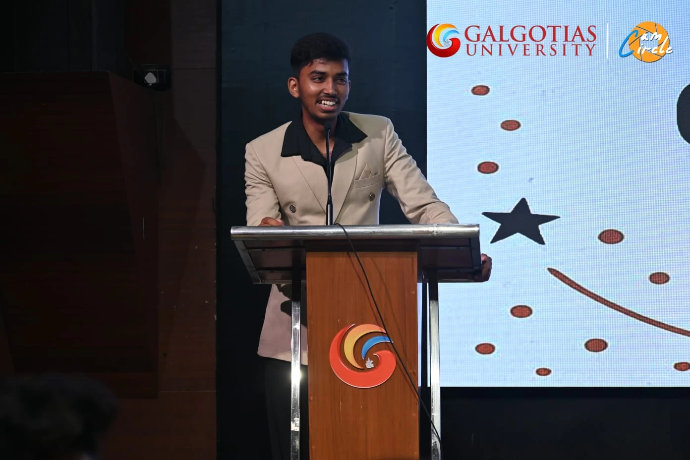
Adolescence is when eating habits quietly set for the next 40 years — shaped by canteens, cafés, social media, and peer pressure, almost never by actual nutrition science. My workshops exist to close that gap in plain, relatable language, not clinical jargon.
Each session is built to be interactive, visual, and genuinely relatable — not a lecture. Topics are customized to the age group and duration you need.
A real look at what ultra-processed food does to growing bodies, focus, and mood — no scare tactics, just the actual science.
Why the "harmless" café habit teens are picking up early adds up in sugar, caffeine, and calories — and how to enjoy it without the damage.
Fact-checking the diet trends, supplement hype, and "clean eating" rules teenagers absorb from Instagram and YouTube.
How breakfast skipping, sugar crashes, and poor hydration are quietly wrecking concentration and exam performance.
Practical fueling, recovery, and hydration guidance for school/college athletes — drawn from certified sports nutrition training.
Helping teens build a sustainable relationship with food instead of falling into restrictive diet culture at a vulnerable age.
Background that schools and colleges can verify directly with the institutions involved.
School of Biomedical Sciences, Galgotias University
Kailash Hospital, Greater Noida — under the Chief Dietician
IIT Madras — 90% score, top 1% of participants
DIABETICON 2025 (NIND), NaariNutriCon 2025, Nutrition Week 2024
A track record of organizing, speaking at, and leading nutrition initiatives across universities, hospitals, and national platforms.
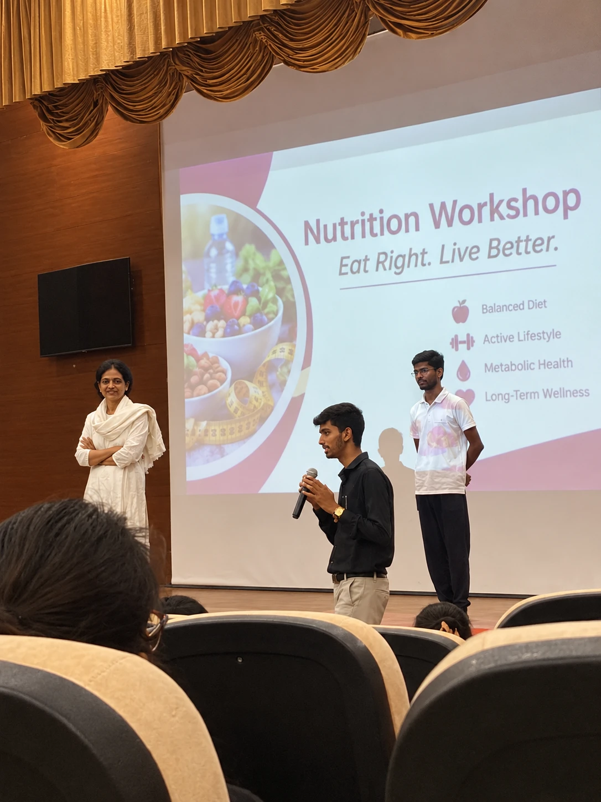
Delivered "Eat Right. Live Better." — a student nutrition awareness workshop covering balanced diets, an active lifestyle, metabolic health, and long-term wellness.
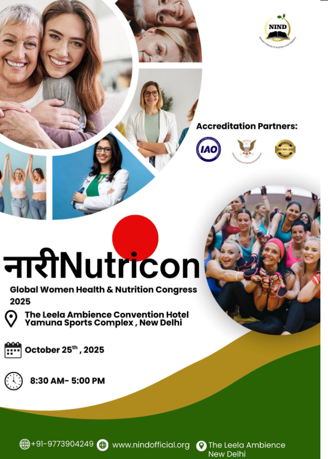
On the core organizing team for India's landmark Women's Health & Nutrition congress, driving marketing and outreach for this large-scale event at The Leela Ambience Convention Hotel, New Delhi — bringing together doctors, dietitians, and educators on one platform.
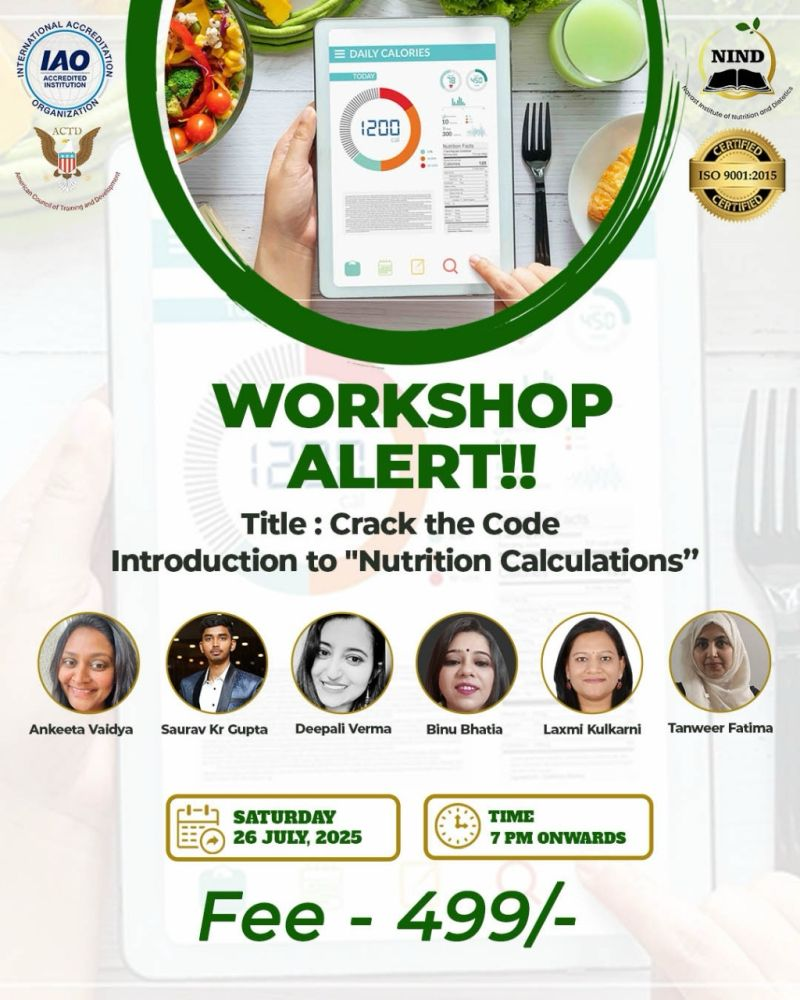
Invited as one of five expert speakers to break down BMI, BMR, TDEE, and macro/micronutrient calculations for students and aspiring dietitians in a live virtual workshop.
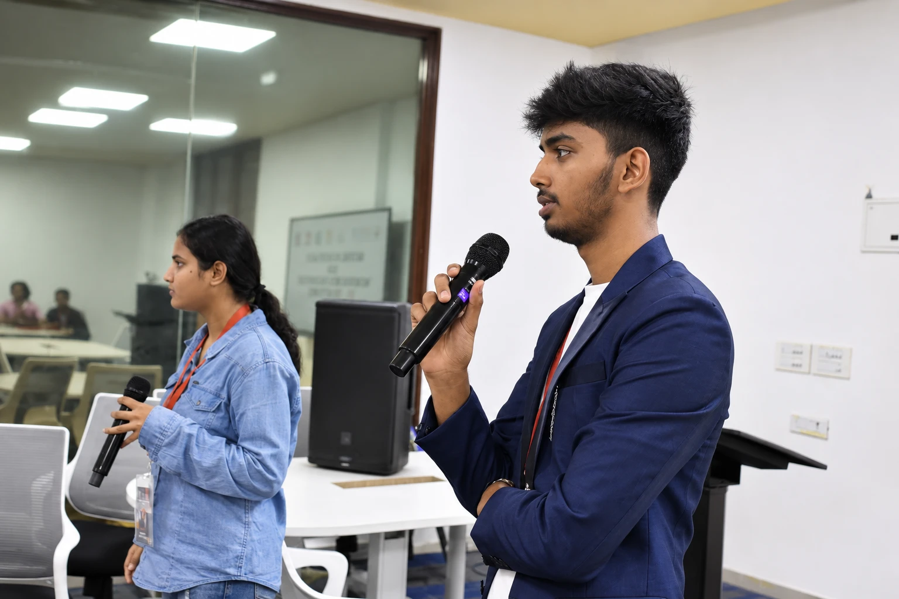
Delivered a workshop on the rising risk of diabetes in adolescents, helping students understand early warning signs and prevention through nutrition.
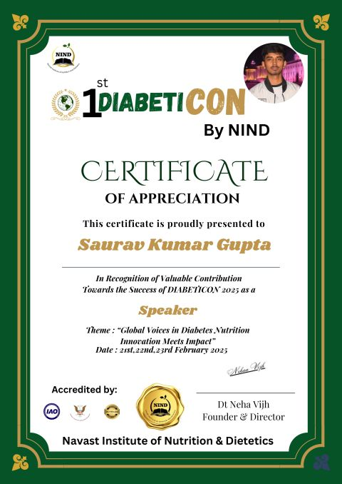
Took the stage to speak on diabetes nutrition, and played a key role on the Organizing Committee — curating sessions and shaping the agenda for this multi-day conference with doctors and dietitians from around the world.
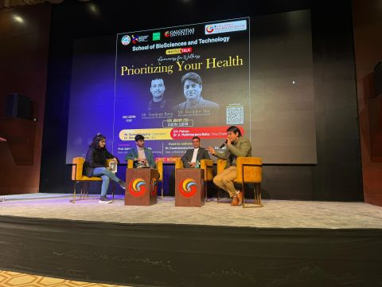
Led key organizing efforts behind this Galgotias University event, helping bring international health coaches Sandeep Rana and Ravinder Mor on stage to speak on building a balanced lifestyle.
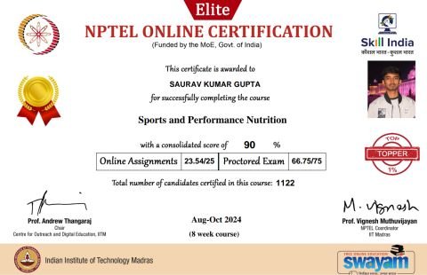
Completed the IIT Madras / NPTEL course with a 90% score, placing in the top 1% of all participants nationally.
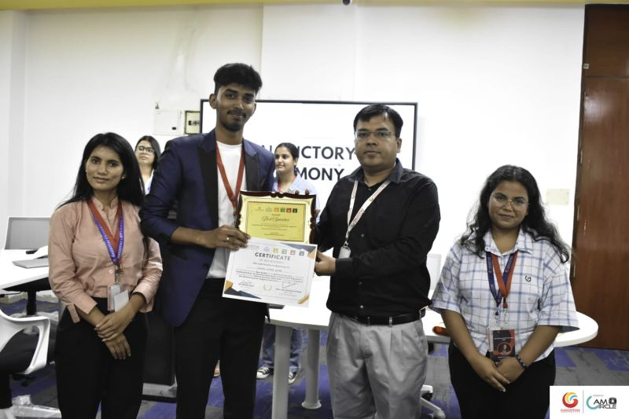
Won Best Speaker at this nutrition debate, held with Ms. Rekha Pal Shah (Assistant Dietician, AIIMS Delhi) in attendance.
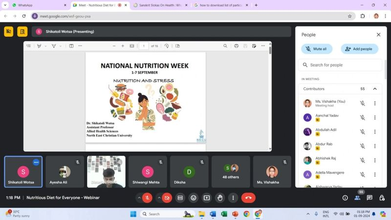
Directed the entire five-day flagship program as Student Convenor — a stress-and-nutrition webinar, a hospital visit to GIMS, a leadership role on the Event Management Committee for an international biosciences conference, and the closing Nutri Food Fair.
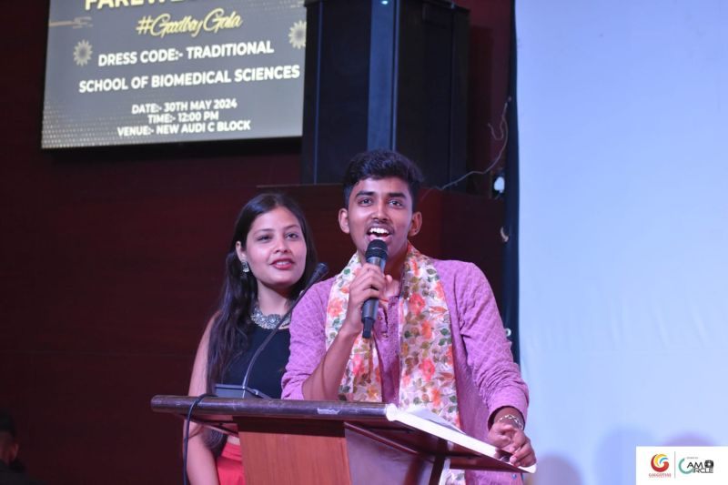
Led the organization and hosted this flagship cultural event, bringing together performances, music, and showcases that celebrated the full diversity and talent of the student community.
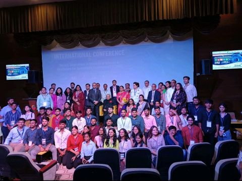
Led the student coordination effort to build and launch a functioning Dietetics OPD from the ground up, creating a lasting platform for practical learning and community nutrition guidance — covered by local press (see below).
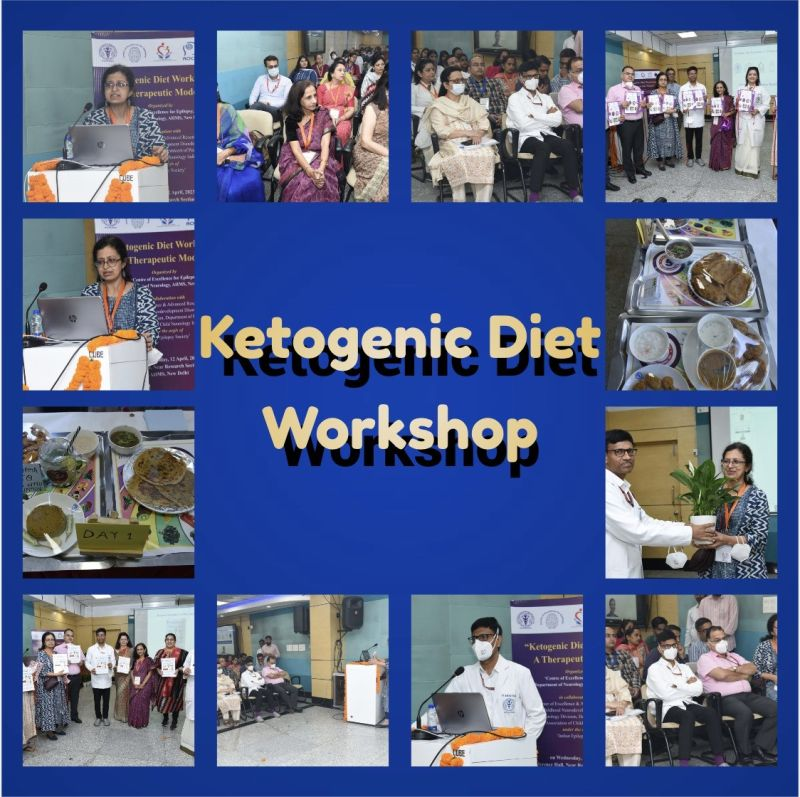
Workshop on the latest research and clinical applications of the ketogenic diet, with networking across the clinical nutrition community.
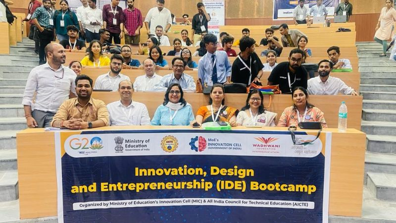
AICTE / Ministry of Education / Wadhwani Foundation bootcamp on building and scaling an entrepreneurial venture.
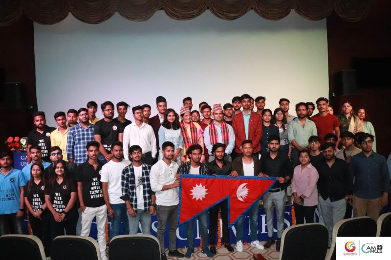
Organized the university's first-ever Nepalese cultural event as a committee member of the Galgotias Nepalese Community — a milestone event hosted with the university CEO in attendance.
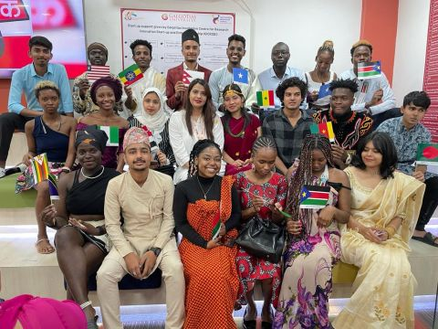
Attended this university-hosted event as an international student, engaging with dignitaries and students from around the world.
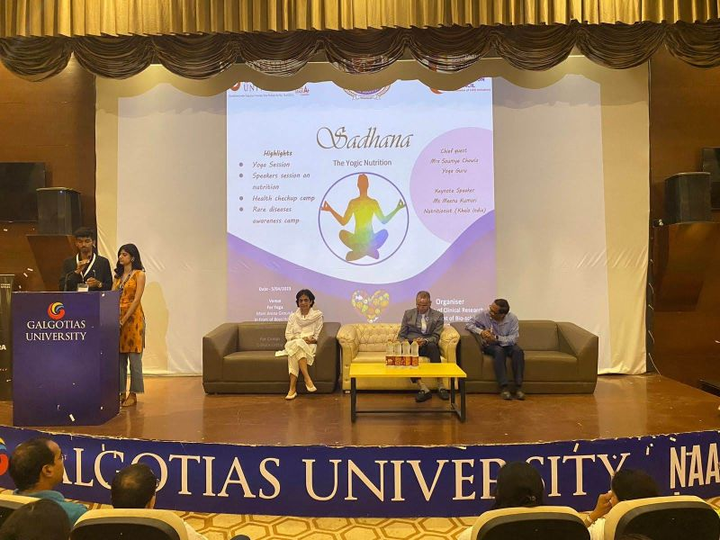
Planned and ran this event exploring the link between yoga and nutrition as Convenor, from coordinating speakers to engaging attendees on holistic health.
The Galgotias University Dietetics OPD launch was covered by regional Hindi press.
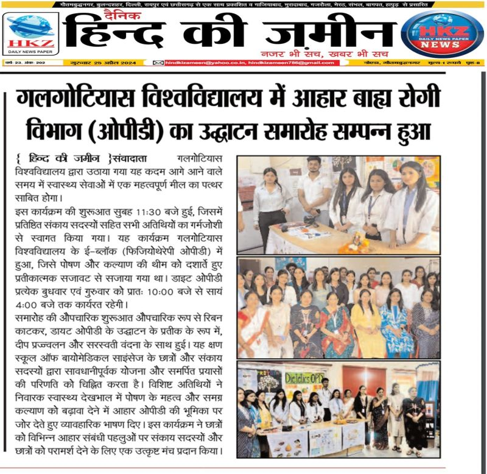
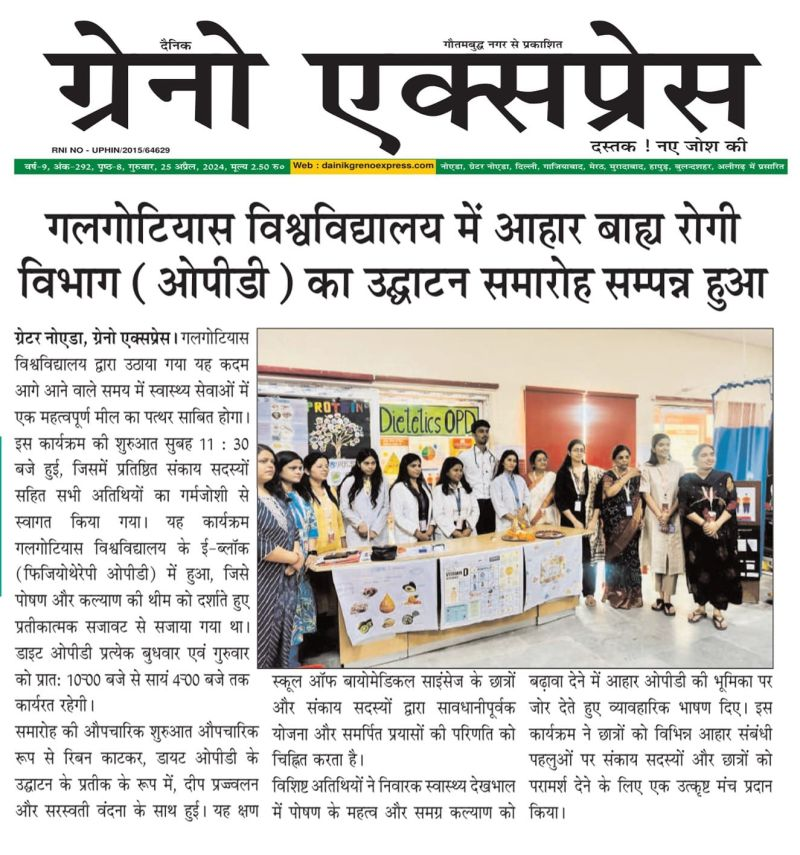
School of Biomedical Sciences, Galgotias University
Indian Institute of Technology, Madras — 90%, top 1% of participants
Kailash Hospital, Greater Noida (45 days)
NCAHP-registered Clinical Dietitian (NACHP: 99-7722-7547-0215) — Gold Medalist, 9.54 CGPA, B.Sc. Clinical Nutrition & Dietetics.
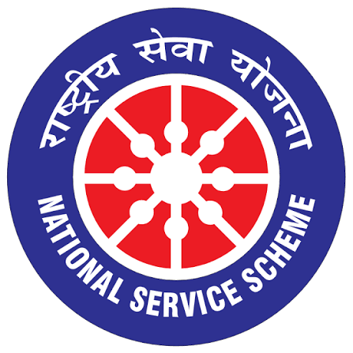
NSS Unit Mentor 2023 – 2024Interactive, age-appropriate sessions on nutrition, junk food, café culture, and healthy habits — built specifically for teenagers and adolescents.